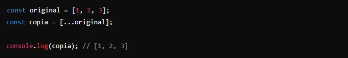
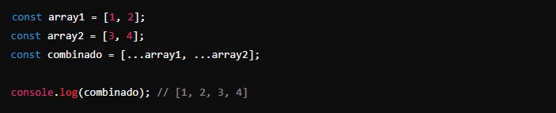
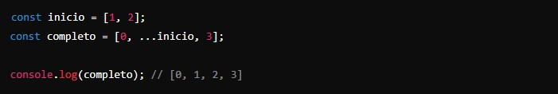
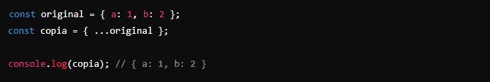
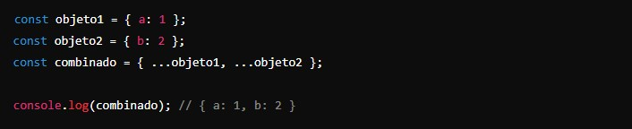
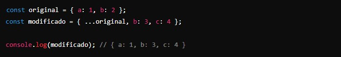
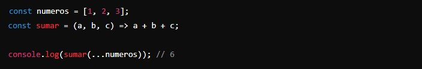
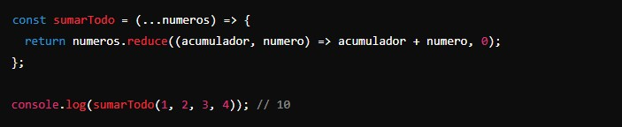
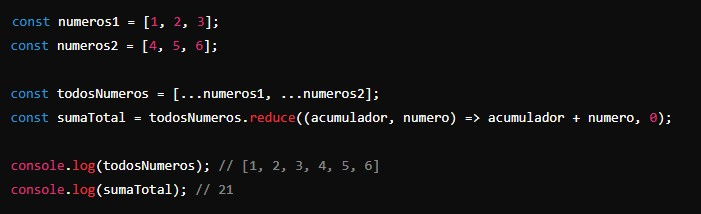

Este operador es muy poderoso y se utiliza para expandir elementos de un iterable (como un array o un objeto) en lugares donde se esperan cero o más argumentos (para llamadas de función) o elementos (para arrays y objetos).
Se representa con tres puntos consecutivos: .... y se puede usar tanto con arrays como con objetos.
Uso del operador de extensión con Arrays:
Permite copiar, combinar y manipular arrays de manera sencilla y elegante.
- Copiar un array:
En lugar de usar un bucle o métodos como slice, puedes usar el operador de extensión para crear una copia superficial de un array.
 - Combinar arrays:
Puedes combinar varios arrays en uno solo de forma sencilla.
 - Añadir elementos a un array:
Puedes añadir elementos a un array existente.

- Copiar un array:
Uso del operador de extensión con Objetos:
El operador de extensión también se puede usar para copiar y combinar objetos.
- Copiar un objeto:
Puedes crear una copia superficial de un objeto.
 - Combinar objetos:
Puedes combinar varios objetos en uno solo.
 - Añadir o sobrescribir propiedades de un objeto:
Puedes añadir nuevas propiedades o sobrescribir las existentes.

- Copiar un objeto:
Uso del operador de extensión en funciones:
El operador de extensión puede ser muy útil al trabajar con funciones, especialmente cuando necesitas pasar un número variable de argumentos.
- Pasar elementos de un array como argumentos:
Puedes expandir los elementos de un array en los argumentos de una función.
 - Crear una función que acepte cualquier número de argumentos:
Puedes usar el operador de extensión para capturar cualquier número de argumentos en una función.

- Pasar elementos de un array como argumentos:
Arrays:
- Copiar: Crear una copia superficial de un array.
- Combinar: Combinar varios arrays en uno solo.
- Añadir elementos: Añadir elementos a un array existente.
Objetos:
- Copiar: Crear una copia superficial de un objeto.
- Combinar: Combinar varios objetos en uno solo.
- Añadir/sobrescribir propiedades: Añadir nuevas propiedades o sobrescribir las existentes en un objeto.
Funciones:
- Pasar argumentos: Expandir los elementos de un array como argumentos en una llamada a función.
- Capturar argumentos: Crear funciones que acepten cualquier número de argumentos.
- Ejemplo práctico: Supongamos que tenemos dos arrays de números y queremos combinarlos y luego sumar todos los elementos. 